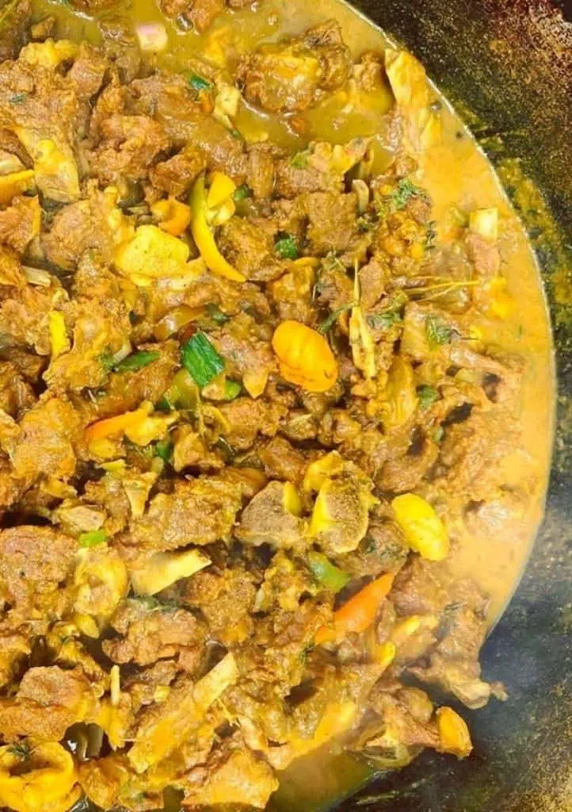

Curry Goat
Ingredients:
- 2 lbs goat meat, cut into cubes
- 2 tablespoons curry powder
- 1 teaspoon salt
- 1/2 teaspoon black pepper
- 2 tablespoons vegetable oil
- 1 onion, chopped
- 3 garlic cloves, minced
- 1 teaspoon grated ginger
- 2 scallions, chopped
- 1 Scotch bonnet pepper, seeded and minced
- 2 cups water
- 1 tablespoon thyme leaves
- 2 potatoes, peeled and cut into chunks
- 1 carrot, peeled and sliced
- 1 can (15 oz) chickpeas, drained and rinsed
- 1 tablespoon cornstarch, dissolved in 2 tablespoons water
- 1 tablespoon chopped fresh cilantro
Instructions:
- In a bowl, mix the goat meat, curry powder, salt, and black pepper.
- In a large pot, heat the oil over medium-high heat. Add the goat meat and cook until browned on all sides, about 5 minutes.
- Add the onion, garlic, ginger, scallions, and Scotch bonnet pepper. Cook for 2 minutes.
- Add the water and thyme. Bring to a boil, then reduce the heat to low and cover the pot. Simmer for 1 hour.
- Add the potatoes, carrot, and chickpeas. Cook for an additional 30 minutes or until the vegetables are tender.
- Add the cornstarch mixture and stir well. Cook for 2 minutes or until the sauce has thickened.
- Garnish with cilantro and serve hot with rice and peas.